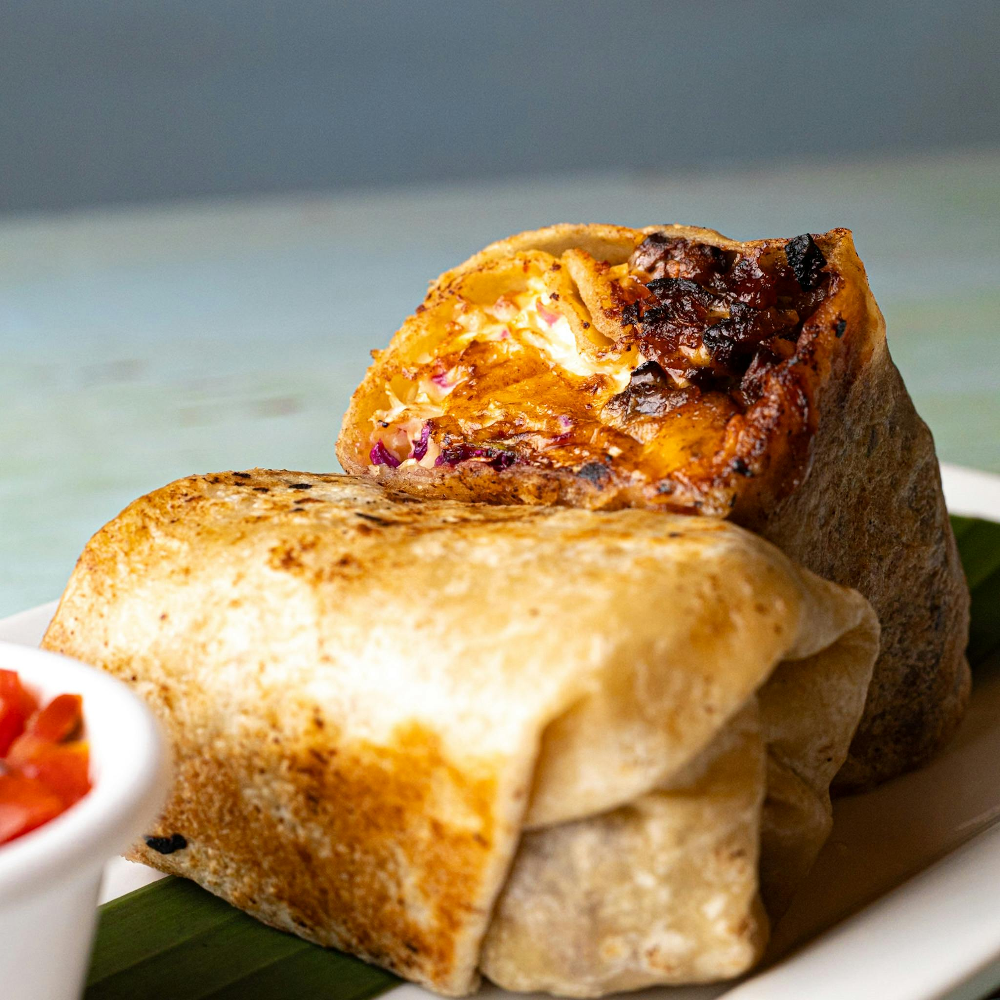

Chicken Burrito
Home

Description
Chicken burrito recipe is perfect for meal prepping. They are easy to assemble, cook, and freeze away.
Ingredients
- 1 rotisserie chicken
- 1 cup shredded cheese
- 2 cans black beans
- 3 cups spanish rice
- 8 large flour tortillas
Instructions
- Break rotisserie chicken into bite sized pieces.
- Heat pan to medium heat and put beans on the pan until they are warmed. About 5 minutes.
- Assemble burrito by laying a tortilla flat on a clean space. Place cheese, chicken, beans, and rice in a line along the tortilla. Fold the sides of the tortilla which are at the ends of the line and roll from the other sides.
- Heat burrito by placing on medium hot pan. Heat each side until browned and crispy. About 2 minutes each side.
- EAT!